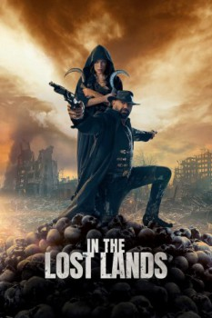

País:Alemania, 102 minutos.
Idiomas:Alemán, Inglés
GénerosAcción, Fantasía, del Oeste
Director/es:Paul W. S. Anderson
Guionistas:Constantin Werner
Códec de vídeo:Unknown
Número: 224


Certificación:R
Argumento:
Basada en el relato de George R. R. Martin. Una reina (Amara Okereke), desesperada por encontrar la felicidad en el amor, envía a la poderosa bruja Gray Alys (Milla Jovovich) a las Tierras Perdidas, en busca de un poder mágico que permite a una persona transformarse en un hombre lobo. Con el misterioso cazador Boyce (Dave Bautista), que la apoya en la lucha contra criaturas oscuras y despiadadas, Gray deambula por un mundo inquietante y peligroso. Pero solo ella sabe que, cada deseo que se concede, tiene consecuencias inimaginables.
Reparto
Medio: Archivo de video,
Localización: D:\Multimedia\Películas\Tierras perdidas (2025) Web-Dl 4K UHD HDR+\Tierras perdidas (2025) Web-Dl 4K UHD HDR+.mkv
Prestado: No
Rel. aspecto: Unknown